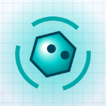

DATA.OUT на iPhone — на весь экран
Поставьте игру на экран «Домой» через Safari: она будет открываться как приложение — без адресной строки, вкладок и названия сайта. Бесплатно, без App Store, полминуты.
1Нажмите «Поделиться»
Откройте игру в Safari и нажмите кнопку Поделиться — квадрат со стрелкой вверх. Обычно она внизу экрана, а когда телефон лежит боком — вверху.
На новых iOS (26 и дальше) её не видно сразу: нажмите ••• справа от адреса, потом Поделиться.
2Выберите «На экран „Домой“»
Откроется список действий. Пролистайте его вниз и нажмите На экран «Домой» — значок с плюсом в квадрате.
Если пункта нет — внизу списка нажмите «Редактировать действия» и добавьте его.
3Нажмите «Добавить»
Появится окно со значком и названием DATA.OUT. Нажмите Добавить в правом верхнем углу.
Если в окне есть переключатель «Открыть как веб-приложение» — оставьте его включённым: так игра откроется на весь экран.
4Играйте со значка
На экране «Домой» появится значок DATA.OUT. Запускайте игру им — она откроется на весь экран, без полосок Safari. Играть лучше боком.
В первый раз войдите в свой аккаунт: у значка своё хранилище, отдельное от Safari. Прогресс, биты и облик хранятся в аккаунте и никуда не денутся.
На Android
В игре в главном меню есть кнопка «Установить игру» — она ставит DATA.OUT на экран как приложение. Если кнопки нет: в Chrome нажмите ⋮ → Добавить на главный экран или Установить приложение. Кнопка «ВЕСЬ ЭКРАН» в игре тоже работает.
Вопросы
Это безопасно? Да: на экран добавляется только ссылка на сайт игры со значком. Ничего не скачивается и не требует доступа к телефону.
Как удалить? Как любое приложение: долгое нажатие на значок → «Удалить».
Обновления? Приходят сами: значок всегда открывает свежую версию игры.